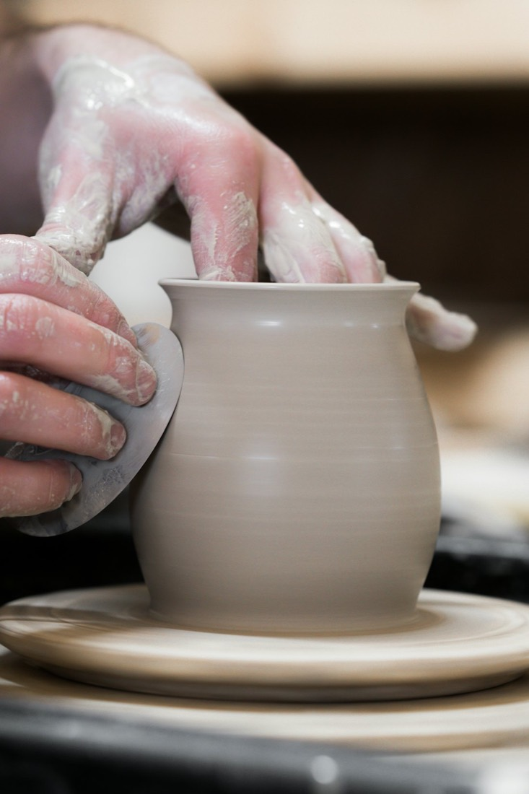
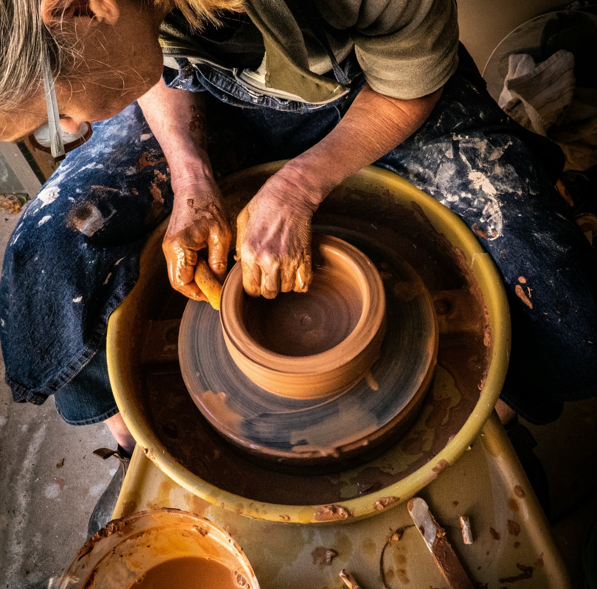
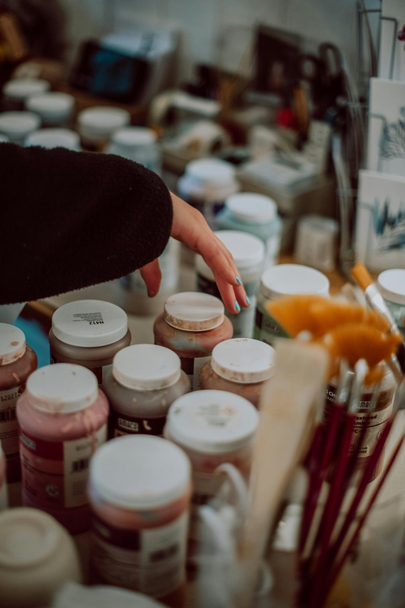
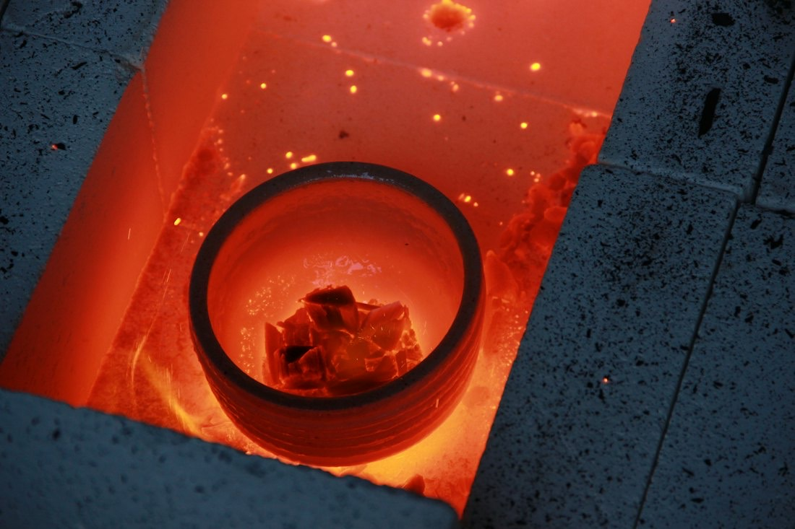
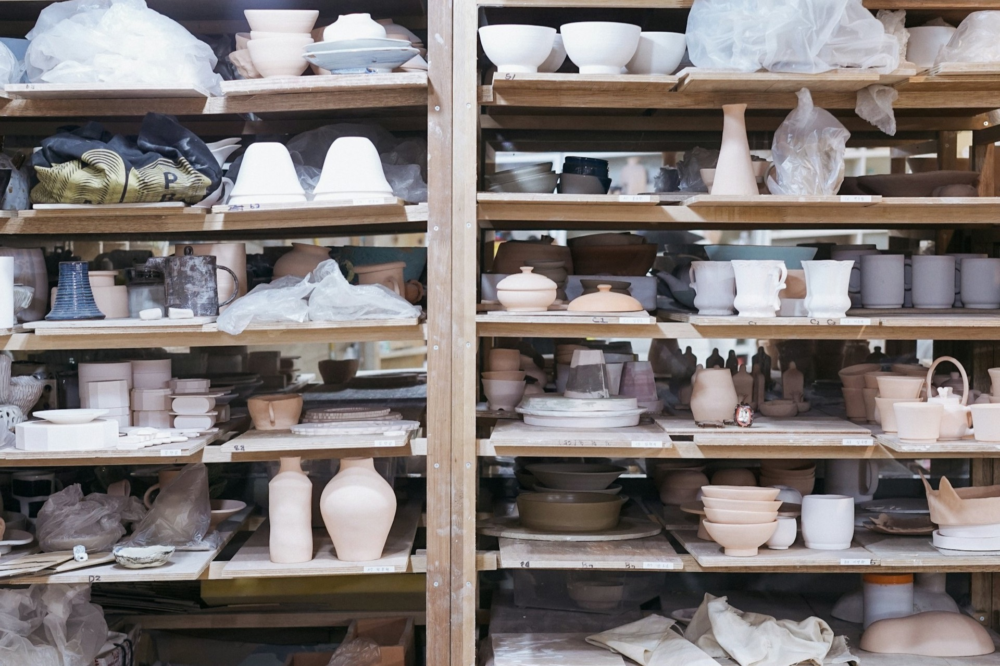

陶芸体験
紐作りの手びねりで、湯呑みや茶碗、鉢などを作ります。約1時間30分。

陶芸教室＆ギャラリー 静岡県浜松市中央区半田町
浜松市で陶芸教室＆ギャラリーを主宰する、隠れ家のような工房です。技法に捕われない自由な作陶をモットーにしています。
陶芸教室＆ギャラリー 静岡県浜松市中央区半田町
浜松市で陶芸教室＆ギャラリーを主宰する、隠れ家のような工房です。技法に捕われない自由な作陶をモットーにしています。
土
信楽土を、
ろくろへ。
粘土は信楽土を3種類。作陶に必要な道具は、ほぼ揃えています。
陶芸の3Dイメージです
工房の1階は作陶室、2階はギャラリー、隣には窯場を併設しています。手回しろくろ8台、電動ろくろ4台、粘土は信楽土3種類、自前調合の釉薬は25種類ほどご用意しています。
ギャラリーには、作品を常時200点ほど展示・販売しています。主宰は大石賢です。

紐作りの手びねりで、湯呑みや茶碗、鉢などを作ります。約1時間30分。

少人数制で、マンツーマンに近い形で受講できます。

作品を常時200点ほど。ご来店の際はご連絡を。

体験は、希望日の前々日までにご予約ください。PayPayも使えます。
| ギャラリー | 9:30〜18:00（ご来店の際はご連絡を） |
|---|---|
| 体験 | 午前は9:30〜、午後は13:30〜 |
体験のご予約は、メールまたはショートメール・留守電で。